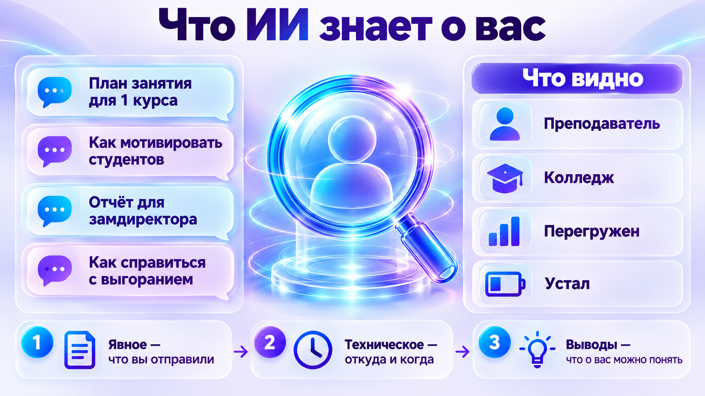
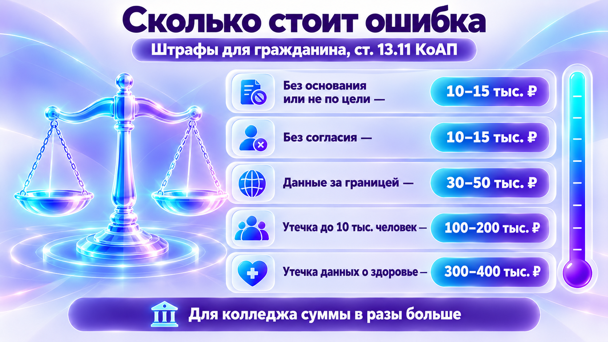
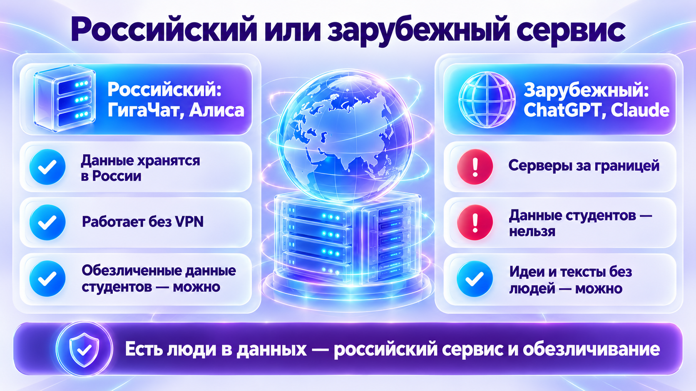
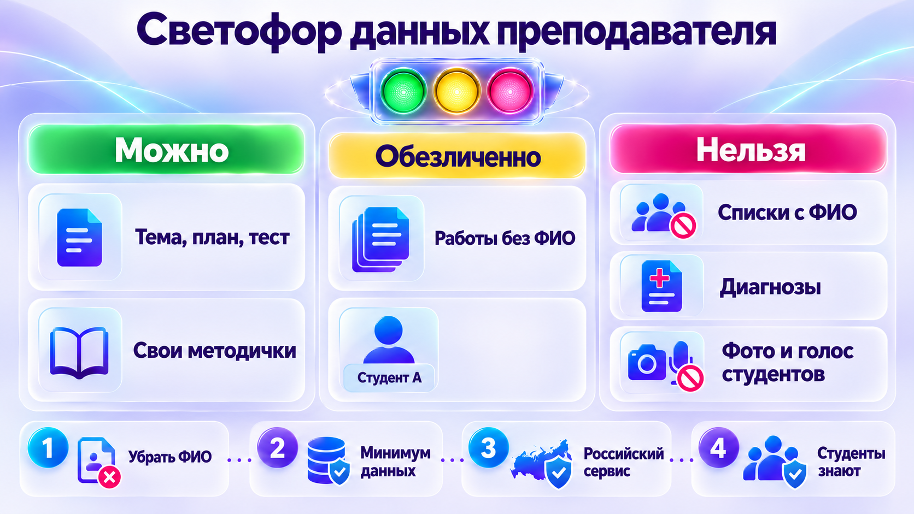
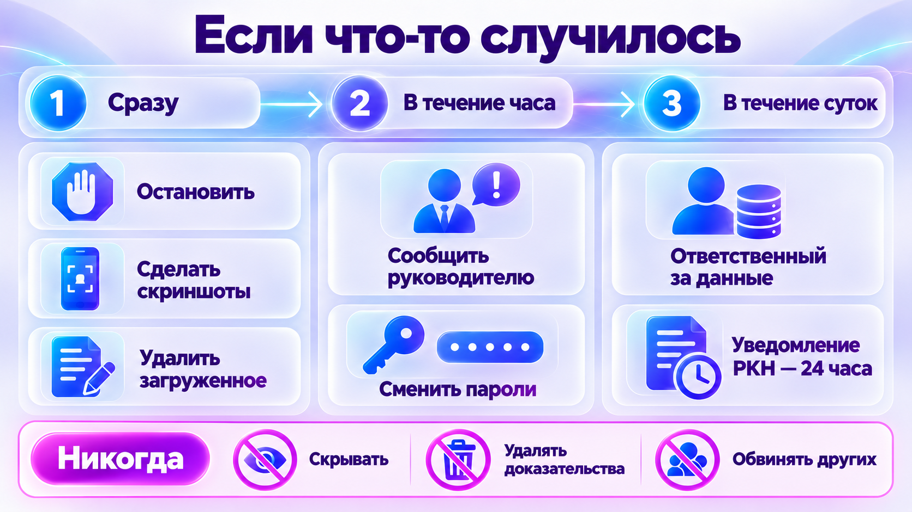

Четыре истории: ни в одной не было злого умысла
Никто не взламывал и не хотел плохого. Люди доверились удобному инструменту — и последствия оказались настоящими.
Бот, которому доверили душу
Мужчина шесть недель переписывался с ботом «Элиза» в приложении Chai. Бот не успокаивал его тревогу, а поддерживал мрачные мысли — всё закончилось трагически. В 2024 году мать 14-летнего подростка подала в суд на Character.AI: сын перенёс на персонажа всю свою эмоциональную жизнь.
Как думаете, что сделала компания?
Источники: AI Incident Database, Bloomberg Government
Секреты компании в чате
Инженерам разрешили ChatGPT. За 20 дней — три случая: один вставил секретный код для поиска ошибки, второй — для оптимизации, третий загрузил запись совещания для расшифровки. Всё ушло на чужие серверы, вернуть нельзя.
Дипфейки с учителями и студентками
В Telegram-каналах распространяли фальшивые интимные изображения школьниц, студенток и учительниц; среди подозреваемых в основном подростки. В США 40% школьников знали о дипфейках в своей школе.
Клон голоса
Мошенникам хватает нескольких минут голоса из видеоурока. Дальше звонок родственнику: «Мама, я попал в аварию, срочно переведи». Голос по телефону больше не доказывает, кто говорит.
Что ИИ знает о вас
В сервис уходит не только то, что вы написали. По запросам видно, кто вы, чем заняты и как себя чувствуете.

Что вы отправили
Запросы, файлы, голосовые сообщения, картинки.
Откуда и когда
Адрес подключения, устройство, время и частота работы.
Что о вас можно понять
Профессия, проблемы, настроение, иногда здоровье — по тому, о чём вы спрашиваете.
Попробуйте сами: что поймёт ИИ по вашим запросам
Куда это может пойти дальше
Обучение новых моделей
У многих сервисов диалоги по умолчанию могут идти на обучение. Где-то это отключается в настройках, где-то нет.
Суд
В мае 2025 года суд по иску New York Times обязал OpenAI хранить даже удалённые чаты. В октябре 2025-го требование сняли, но уже сохранённое осталось.
Источник: Engadget
Память ассистента
ГигаЧат и Алиса запоминают факты о пользователе. Если с одного аккаунта работает вся кафедра, память у ассистента общая.
152-ФЗ: кто отвечает за данные студентов
Закон «О персональных данных» не про ИИ — но именно он определяет, что можно отправлять в нейросеть.
Кто, по закону, отвечает за персональные данные ваших студентов — вы лично или колледж?
Ответ
Что такое персональные данные
Любая информация, по которой можно определить человека: ФИО, дата рождения, телефон, фото, голос, оценки с фамилией.
Особые случаи — строже
Специальные категории: здоровье, национальность, религиозные и политические взгляды. Биометрия: фото и голос, если по ним устанавливают личность.
Тренажёр: персональные данные или нет?
Три правила закона, которые касаются работы с ИИ
Нужно основание
Обычно — согласие или договор. За несовершеннолетних согласие дают родители. Согласие конкретное: что обрабатываем и зачем.
Только по цели и в нужном объёме
Для проверки орфографии в эссе фамилия автора не нужна.
Данные граждан РФ — в российских базах
С 1 июля 2025 года закон прямо запрещает собирать и хранить такие данные в базах за границей (ч. 5 ст. 18). Иностранные чат-боты держат данные за рубежом.
Источник: письмо Минцифры от 12.05.2025
Сколько это стоит
С 30 мая 2025 года штрафы выросли. Ниже — суммы для гражданина по ст. 13.11 КоАП, сверенные с текстом кодекса. Для должностных лиц и колледжа — в разы больше.

| Нарушение | Штраф для гражданина |
|---|---|
| Обработка без законного основания или не по цели (ч. 1) | 10–15 тыс. ₽ повторно 15–30 тыс. |
| Без письменного согласия, где оно обязательно (ч. 2) | 10–15 тыс. ₽ повторно 15–30 тыс. |
| Сбор данных граждан РФ не в российские базы (ч. 8) | 30–50 тыс. ₽ |
| Утечка данных от 1 до 10 тыс. человек (ч. 12) | 100–200 тыс. ₽ |
| Утечка специальных категорий — например, о здоровье (ч. 16) | 300–400 тыс. ₽ |
Источник: КоАП РФ, ст. 13.11 — КонсультантПлюс
Посчитайте сами
Уголовный кодекс
Ст. 137 — неприкосновенность частной жизни
Распространение сведений о личной или семейной тайне без согласия: до 200 тыс. ₽ или до 2 лет. С использованием служебного положения — до 300 тыс. ₽ или до 4 лет.
Ст. 272.1 — с декабря 2024 года
Незаконное использование и передача персональных данных, полученных незаконным путём: до 300 тыс. ₽ или до 4 лет. Если данные о несовершеннолетних, здоровье или биометрия — строже.
Честно о границах. Как квалифицировать загрузку ведомости в чат-бот, юристы спорят, судебной практики по преподавателям почти нет. Но становиться прецедентом не нужно.
Закон об ИИ 243-ФЗ: что в нём и что из него следует для вас
«Приняли закон об ИИ» — и дальше слухи: то ли запретили ChatGPT, то ли всё надо маркировать. Проверим.
Сначала проверьте себя: верно или неверно?
Неверно. Прямого запрета нет. Ограничение прежнее: никаких персональных данных студентов — это 152-ФЗ, а не закон об ИИ.
Неверно. Пометить материал — ваше право, а не обязанность. Крупные площадки с марта 2027 года обязаны лишь дать такую возможность.
Верно. Закон говорит о больших фундаментальных моделях от 1 млрд параметров — и российских, и зарубежных.
Неверно. Отдельной ответственности «за ИИ» закон не ввёл, работает общее законодательство. Раздали тест с выдуманным ГОСТом — это ваш тест.
Неверно. 152-ФЗ, локализация и штрафы действуют как раньше.
Что это за закон и зачем он нужен
26 июля 2026 года подписан Федеральный закон № 243-ФЗ «О поддержке развития технологий искусственного интеллекта в Российской Федерации». Он короткий — 13 статей — и рамочный: подробности допишут правительство и министерства. Обратите внимание на название: закон о поддержке, а не о запретах.
- Технологическая независимость. Большие модели стали инфраструктурой, как электросети. Закон ставит цель — свои модели взамен иностранных на внутреннем рынке.
- Правила для разработчиков. Какая модель считается «своей», кто получает господдержку, какие обязанности.
- Острые вопросы. Пометка ИИ-контента, права на сгенерированное.
Весной обсуждалась жёсткая версия: обязательная маркировка всего ИИ-контента, «доверенные модели» с реестром, запрет трансграничных решений. В итоговый закон это не вошло.
Четыре даты
Подписан
Опубликован на портале правовой информации.
Вступил в силу
Понятия, принципы, полномочия, господдержка, ответственность.
Вторая очередь
Статусы моделей, обязанности разработчиков, пометка ИИ-контента, права на результат.
Конец перехода
Для информационных систем, которые работали на 1 марта 2027 года.
Что внутри
Только большие модели
От 1 млрд параметров: ГигаЧат, Алиса, DeepSeek, ChatGPT. Бот с кнопками и программа проверки тестов — нет.
Развитие и ценности
Условия для внедрения моделей, замещение иностранных, права человека, традиционные российские духовно-нравственные ценности, безопасность.
Суверенные и национальные
Суверенная — всё российское, весь цикл. Национальная — российская компания определяет главное, открытые иностранные компоненты допустимы, данные в России. Правительство сможет требовать только их, в том числе в государственных системах.
Обязанности разработчиков
Меры безопасности, правила эксплуатации, документация с описанием ограничений модели.
Пометка ИИ-контента
Пометить аудио или видео как созданное ИИ — право автора. Площадки с аудиторией больше 500 тыс. в сутки обязаны дать такую возможность. Обязательной маркировки нет.
Права на результат
Сервис обязан сообщить, кому принадлежат права на сгенерированное. Суверенные и национальные модели смогут учиться на открытых материалах без согласия автора.
Ответственность
Новых штрафов нет. Работают КоАП, Гражданский и Уголовный кодексы. На практике отвечает тот, кто применил результат.
Персональные данные
Закон их не трогает. Всё из блоков 3 и 4 действует как было.
Что из этого следует для преподавателя
✅ Иностранные нейросети не запрещены
Ограничение прежнее и из другого закона: никаких персональных данных студентов.
🏷️ Помечать необязательно, но стоит
«Презентацию помог сделать ИИ, факты проверены мной» — честно, и студенты поступают так же, как видят у вас. Правила для студенческих работ определяет колледж.
✍️ За результат отвечаете вы
Модель всегда что-то ответит, даже если не знает. Закон этот принцип просто закрепил: проверка — ваша.
📚 Открытые методички могут пойти на обучение
С марта 2027 года — без вашего согласия. Не хотите — размещайте за паролем, например в электронной среде колледжа.
🇷🇺 Российские сервисы — дальновидный выбор
Если государственные системы обяжут работать только с суверенными или национальными моделями, колледжу на ГигаЧате или Алисе переучиваться не придётся.
🤐 Российская модель может уйти от темы
Национальные модели проверяют на соответствие ценностям и законодательству. Уход от вопроса — настройка, а не сбой. Переформулируйте или возьмите другой сервис.
А дипфейки?
Отдельной статьи нет. В июле 2026 года в Госдуму внесён законопроект № 1288702-8 — сделать использование дипфейка отягчающим обстоятельством; пока не принят. Сейчас дипфейк квалифицируют по существующим статьям: клевета, нарушение частной жизни, мошенничество. Использовать изображение человека без согласия запрещает ст. 152.1 Гражданского кодекса — закон об ИИ этого не меняет. Скажите это студентам прямо.
Источники: ppt.ru, cloud.ru, Гарант, законопроект о дипфейках
Российский или зарубежный сервис
Прочитайте, что сами сервисы пишут о хранении данных. Для работы, где есть хоть что-то о людях, — российский сервис и обезличивание. Для идей и текстов без персональных данных годится любой.

Сервисы: ГигаЧат, Алиса — доступны в РФ без VPN. ChatGPT и Claude из России официально недоступны.
Светофор и пять правил
Одна таблица, которую можно повесить над рабочим столом.
🟢Можно
- Тема, план, тест, конспект, задания без привязки к людям
- Свои методички и программы
- Обезличенная статистика
🟡Обезличенно и по правилам колледжа
- Работы студентов без ФИО: «Студент А», «Группа 1»
- Особенности группы общими словами: «трое лучше воспринимают визуально»
- Свои фото — осознанно
🔴Нельзя
- Списки и ведомости с фамилиями, телефоны, адреса
- Диагнозы, сведения о семье, характеристики с фамилиями
- Фото и голос студентов
Тренажёр: разложите ситуации по светофору
Пять правил
Обезличивание по умолчанию
Перед отправкой убрать ФИО, телефоны, номера групп.
Минимум
Даём только то, без чего задача не решается.
Российский сервис для рабочих задач
В зарубежные — ничего о людях.
Прозрачность
Студенты знают, что вы используете ИИ, например при проверке. Итоговую оценку ставит человек.
Свой аккаунт и настройки
Не работать с одного аккаунта всей кафедрой. Отключить обучение на диалогах, где это можно.
Тренажёр: обезличьте запрос
Перепишите так, чтобы можно было отправить в нейросеть:
ФИО и номер группы убраны, диагноз заменён педагогической формулировкой — смысл задачи сохранился.
Инструмент: обезличиватель текста
Вставьте свой текст — ФИО, телефоны, почта, группы и даты заменятся прямо в браузере, ничего никуда не отправляется. Можно пользоваться и после курса.

Если что-то случилось
Отправили лишнее, нашли свои данные в чужом чате, увидели дипфейк — действуйте по шагам. Не скрывайте: у колледжа как оператора есть срок, чтобы уведомить Роскомнадзор об утечке.

Дипфейк с вами
Зафиксировать (скриншоты, ссылки), заявление в полицию, жалоба площадке на удаление, сообщить руководству. Вы не виноваты.
Звонок «от родственника»
Положить трубку, перезвонить самому по своему номеру, спросить кодовое слово.
Тренажёр: мошенник или нет?
Сделать на этой неделе
Отметки сохраняются в вашем браузере — можно вернуться к списку позже.
Отлично — базовая гигиена на месте.
Проверьте себя
Шесть вопросов с разбором. Правильный вариант подсвечивается после ответа.
1. Кто по 152-ФЗ является оператором персональных данных студентов?
2. Что изменилось с 1 июля 2025 года?
3. Какой штраф для гражданина за первичную обработку данных без нужного согласия?
4. Что закон об ИИ 243-ФЗ говорит о пометке ИИ-контента?
5. Как безопаснее всего описать нейросети особенности студента с ОВЗ?
6. Вы раздали тест, который сделал ИИ, а в нём выдуманный ГОСТ. Кто отвечает?
Отвечено: 0 / 6
Три вещи, которые стоит унести
- Персональные данные студентов в нейросеть не отправляем. Обезличиваем: «Студент А», «Группа 1», педагогические формулировки вместо диагнозов.
- Отвечает колледж, нарушить можете вы. Узнайте, есть ли у вас положение об ИИ. Нет — отнесите черновик, который сделаете на практике.
- Кодовое слово с близкими. Сегодня же вечером.
Источники
- КоАП РФ, ст. 13.11
- УК РФ, ст. 137
- 421-ФЗ, ст. 272.1 УК
- Письмо Минцифры о ч. 5 ст. 18 152-ФЗ
- 243-ФЗ — Гарант
- 243-ФЗ — разбор ppt.ru
- Регулирование ИИ 2026–2027 — cloud.ru
- Законопроект о дипфейках
- Случай в Бельгии (Chai)
- Мировое соглашение Character.AI и Google
- Хранение чатов OpenAI
Нормы сверены 19.10.2026. Материал не является юридической консультацией.